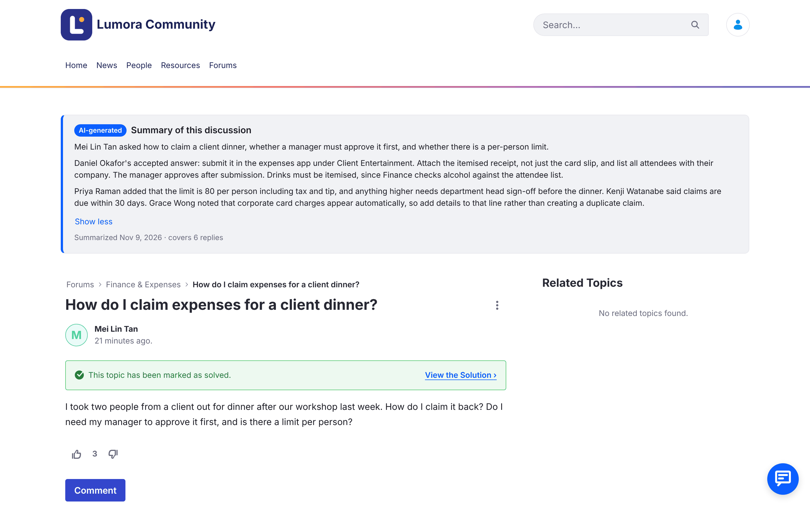
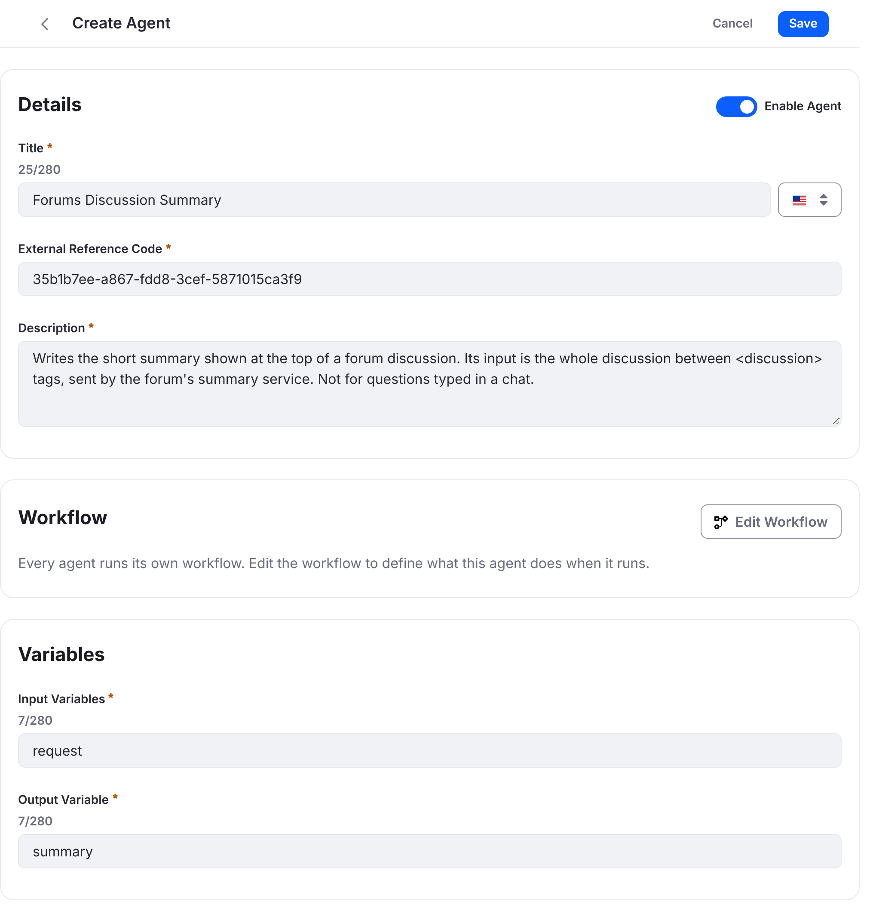
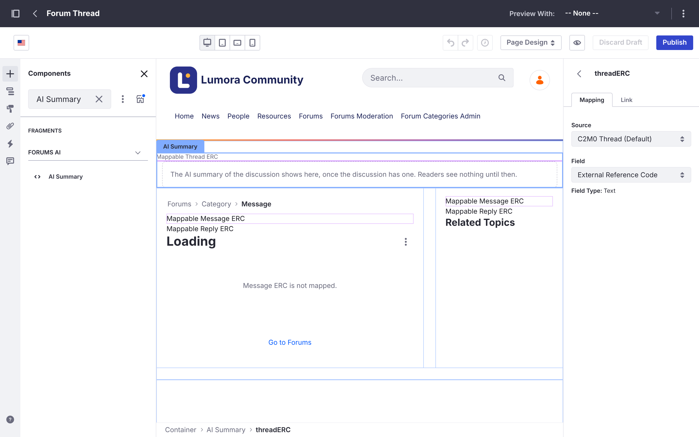
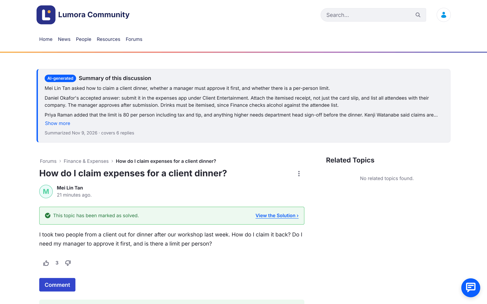

AI Discussion Summaries with AI Hub
Liferay AI Hub is generally available from Liferay DXP 2026.Q3, with a 30-day free trial. On Liferay DXP 2026.Q1, where AI Hub is in beta, you also need AI Hub support for your update, which you request from Liferay Support (Step 2). This recipe was tested on Liferay Self-Hosted with Docker; other Liferay environments haven’t been tried yet.

Powered by Liferay AI Hub. Liferay AI Hub lets you deploy AI agents that learn, make decisions, and improve your digital experiences, without the technical barriers. Learn about Liferay AI Hub
What You’ll Build
An AI summary at the top of busy discussions on your Liferay Forums site. Someone who opens a long topic, such as “How do I claim expenses for a client dinner?”, reads in a few lines what was asked, the accepted answer and who gave it, and what is still open, before scrolling through the replies.

- One summary per discussion, shared by every reader. It’s written on the server once a discussion has enough replies and has gone quiet, and again after new replies settle, not on every page view.
- Marked as AI-generated, with when it was written and how many replies it covers. Discussions without a summary look as they do today.
- Written by an AI Hub agent in your AI Hub account, so you manage its model, instructions and guardrails in AI Hub. Liferay runs it in a workflow, through its own connection to AI Hub, so the AI Hub credentials stay in Liferay.
- Follows the forum’s moderation: a flagged topic shows no summary, and a summary is written again when posts are edited or deleted, so it never keeps what a moderator removed.
The forum’s own packages aren’t changed: the summaries are an add-on installed beside them. The screenshots show a forum branded as a fictitious company, Lumora Community, as the Liferay Forums guide describes in Matching Your Company’s Look.
For a chat that finds discussions for members, see the Forums Assistant with AI Hub recipe. The two recipes work on their own or together, and share the same fragment set.
Ingredients
| Ingredient | Type | Guide |
|---|---|---|
| Marketplace App | Liferay Forums guide | |
| Liferay AI Hub: an agent | Liferay product (generally available from DXP 2026.Q3; beta on 2026.Q1) | AI Hub, Agent Workflows |
| Liferay DXP connected to AI Hub | DXP feature | Integrating AI Hub with Liferay DXP |
| A workflow with an AI Hub agent step | DXP feature | Workflow |
| The summary object and service | Client extensions | Client Extensions |
| Fragments and display page templates | DXP feature | Managing Fragments, Display Page Templates |
Downloads: version 0.2.0 of the add-on.
| File | What it is |
|---|---|
| liferay-forums-ai-summary-batch.zip | The Forums AI Summary object, which holds each discussion’s summary |
| liferay-forums-ai-summary-etc-spring-boot.zip | The summary service, which finds discussions that need a summary, starts the workflow for each, and saves the summary the workflow writes (32 MB) |
| forums-ai-summary.workflow.xml | The Forums AI Summary workflow: it runs the agent through the forum’s AI Hub connection, then hands the summary to the service |
| forums-discussion-summary.workflow.xml | The workflow of the Forums Discussion Summary agent |
| forums-ai-fragments.zip | The Forums AI fragment set: AI Summary shows the summary on the topic page, and AI Hub Chat is for the Forums Assistant |
| liferay-forums-ai-summary-0.2.0-source.zip | The source of all of the above, to read or change them. Its README says how to build the zips |
All are available under the same licenses as Liferay Forums: LGPL-2.1-or-later or the Liferay DXP EULA.
Before you start, you need:
- Liferay DXP 2026.Q1 LTS on Liferay Self-Hosted with Docker, with AI Hub support (Step 2), with Liferay Forums 1.0.0 installed, with its required Liferay fixes, and its forum site created. This recipe was tested on 2026.Q1.4 with PostgreSQL.
- An AI Hub account, with the Client ID and Client Secret Liferay provided for it.
- Administrator access to the forum’s Liferay, and access to the server that runs its Docker containers.
Steps
Step 1: Install Liferay Forums
Install Liferay Forums and create the forum site as the Liferay Forums guide describes.
Once the site exists, remove the site initializer zip as the guide says. If it stays deployed, it runs again at every Liferay start and resets the site’s templates, including the summary you add in Step 7.
Step 2: Connect the Forum’s Liferay to AI Hub
Liferay runs the summary agent through its own connection to AI Hub, so the AI Hub credentials stay in Liferay. Integrating AI Hub with Liferay DXP describes the connection.
-
On Liferay DXP 2026.Q1, request AI Hub support from Liferay Support. 2026.Q1 updates, including 2026.Q1.4 that this recipe was tested on, don’t include everything the summaries need. Open a Support ticket asking for AI Hub support (LPD-107054 and LPD-107058) for your 2026.Q1 update (for example, 2026.Q1.4), and give your current update and hotfix:
LPD What it adds LPD-107054 The connection to AI Hub: the AI Hub settings in Instance Settings LPD-107058 The AI Hub agent step for workflows, which runs an AI Hub agent through that connection If you also add the Forums Assistant, ask for LPD-93555 in the same ticket. Liferay Support provides it as a hotfix or as the update that includes it. AI Hub is in beta on 2026.Q1 and backports are in progress, so a later 2026.Q1 update may include them: check with Liferay Support. On 2026.Q3 and later, skip this step.
-
On 2026.Q1, turn on the feature flag: Control Panel → Instance Settings → Feature Flags → Release, then enable AI Hub (LPD-62272). On Liferay Self-Hosted, you can set it in
portal-ext.propertiesinstead:feature.flag.LPD-62272=true -
Connect it: go to Control Panel → Instance Settings, and under Platform click AI Hub. Enter the Client ID and Client Secret Liferay provided, and the AI Hub Service URL given in Integrating AI Hub with Liferay DXP. Click Save.
This recipe was tested on 2026.Q1.4 with pre-release builds of these AI Hub backports, so some labels may differ slightly in your version.
Step 3: Create the Forums Discussion Summary Agent
The agent turns one discussion into a short summary. It has a single LLM step and doesn’t search anything: the workflow sends it the discussion.
- Download forums-discussion-summary.workflow.xml.
- In AI Hub, open the agent builder and click New Agent.
- Add the workflow first, before you fill in the form: the form may not keep what you typed while you edit the workflow.
- Click Edit Workflow, then Source View.
- Replace the whole source with the content of the downloaded file, and click Update.
- Wait for Workflow updated successfully. AI Hub names the workflow after the agent, so the name in the file doesn’t matter.
- Click Cancel to go back to the agent.
The Diagram View may show only Start and End. The agent’s LLM step is still there: Source View shows it, and the agent runs it.
- Fill in the agent:
- Title:
Forums Discussion Summary - External Reference Code: keep the code AI Hub filled in, and copy it: you put it in the workflow in Step 6. Codes are unique across the whole AI Hub, and AI Hub doesn’t warn you when a code you type is taken: it just doesn’t save the agent.
-
Description:
Writes the short summary shown at the top of a forum discussion. Its input is the whole discussion between <discussion> tags, sent by the forum's summary service. Not for questions typed in a chat. - Input Variables:
request - Output Variable:
summary

- Title:
- Turn on Enable Agent, and click Publish. The agent appears in the agent builder’s list. Without Enable Agent, it’s published inactive and doesn’t run.
The agent’s instructions ask for plain text of at most 120 words, in the discussion’s language: what was asked, the answer or what was agreed (the accepted answer first, and who gave it), and what is still open. They treat posts as data written by members, never as instructions, and don’t assume anyone’s gender. To change the summary’s style or length, edit the instructions in the agent’s LLM step.
Step 4: Deploy the Summary Object
Copy liferay-forums-ai-summary-batch.zip into Liferay’s osgi/client-extensions folder, for example:
docker cp liferay-forums-ai-summary-batch.zip liferay:/opt/liferay/osgi/client-extensions/
Here liferay is the name of the forum’s Liferay container. Liferay creates the Forums AI Summary object, site-scoped, and its Forums AI Summary Status picklist. Check that they appear in Control Panel → Objects.
Step 5: Deploy and Run the Summary Service
The service runs as its own container next to Liferay. Every few minutes, it looks for discussions with enough replies that have gone quiet and starts the workflow of Step 6 for each one. When the workflow has the summary, it hands it back to the service, which saves it in the object. The service has no AI Hub settings.
-
Deploy its client extension. Copy liferay-forums-ai-summary-etc-spring-boot.zip into
osgi/client-extensionsas in Step 4. Liferay creates the service’s OAuth applications and its workflow action, Forums AI Summary Save, and writes its connection details, its routes, to/opt/liferay/routes/default/liferay-forums-ai-summary-etc-spring-boot.The service reads those routes, so Liferay’s
/opt/liferay/routesfolder must be in a Docker volume or a folder on the server. In these examples, it’s the volumeliferay-routes, mounted when the Liferay container was created with-v liferay-routes:/opt/liferay/routes. -
Build the service’s image from the same zip:
unzip liferay-forums-ai-summary-etc-spring-boot.zip -d forums-ai-summary-service docker build -t forums-ai-summary-service forums-ai-summary-service -
Run the service in the Liferay container’s network, so it reaches Liferay, and Liferay reaches it, at
localhost:docker run -d --name forums-ai-summary --network container:liferay --restart unless-stopped \ -v liferay-routes:/opt/liferay/routes:ro \ -e LIFERAY_ROUTES_CLIENT_EXTENSION=/opt/liferay/routes/default/liferay-forums-ai-summary-etc-spring-boot \ -e LIFERAY_ROUTES_DXP=/opt/liferay/routes/default/dxp \ forums-ai-summary-serviceIf your forum site’s friendly URL isn’t
/forums, add-e FORUMS_AI_SUMMARY_SITES=with its path. -
Check that it’s ready:
docker exec liferay curl -s http://localhost:58082/readyIt answers
READY. If it doesn’t,docker logs forums-ai-summarysays why.
Settings. Add any of these to docker run with -e:
| Setting | Default | What it sets |
|---|---|---|
FORUMS_AI_SUMMARY_WORKFLOW |
Forums AI Summary |
The workflow’s name, from Step 6 |
FORUMS_AI_SUMMARY_SITES |
forums |
The forum sites, by friendly URL path, comma-separated |
FORUMS_AI_SUMMARY_MIN_REPLIES |
5 |
Replies a discussion needs before it gets a summary |
FORUMS_AI_SUMMARY_QUIET_PERIOD_MINUTES |
10 |
Minutes without new replies or edits before a summary is written |
FORUMS_AI_SUMMARY_DAILY_LIMIT |
200 |
Summaries written a day (UTC), to keep AI Hub use predictable |
FORUMS_AI_SUMMARY_INTERVAL_SECONDS |
300 |
Time between the service’s passes |
FORUMS_AI_SUMMARY_RETRY_MINUTES |
60 |
Time before a summary whose workflow didn’t start, or hasn’t saved it, is tried again. The stuck workflow is deleted first |
FORUMS_AI_SUMMARY_EDIT_LOOKBACK_HOURS |
24 |
How far back the service looks for edited posts; keep it longer than the service is ever stopped |
FORUMS_AI_SUMMARY_MAX_INPUT_CHARS |
24000 |
The longest discussion sent to the agent; longer ones are shortened |
FORUMS_AI_SUMMARY_MAX_SUMMARY_CHARS |
1200 |
The longest summary saved |
Step 6: Deploy the Workflow
The Forums AI Summary workflow writes each summary in two steps: its AI Hub agent step runs the Forums Discussion Summary agent through the connection of Step 2, then its last step hands the summary to the service’s workflow action.
- Download forums-ai-summary.workflow.xml, and replace
FORUMS_DISCUSSION_SUMMARYin it with the agent’s external reference code from Step 3. It appears once, inagent-definition-external-reference-code. -
Deploy it through Liferay’s workflow API, with an administrator’s email address and password, for example with
jqandcurl:jq -Rs '{name: "Forums AI Summary", title: "Forums AI Summary", content: .}' forums-ai-summary.workflow.xml | curl -u "admin@example.com:password" -H "Content-Type: application/json" -d @- \ "https://forums.example.com/o/headless-admin-workflow/v1.0/workflow-definitions/deploy"The answer lists the workflow’s steps, with
AI_HUB_AGENTamong them. You can also run the same request, postWorkflowDefinitionDeploy, from the forum’s API Explorer (/o/api, headless-admin-workflow). The workflow then appears in Control Panel → Workflow → Process Builder.
You don’t assign the workflow to anything: the service starts it, once for each summary, and it usually finishes in a few seconds.
Step 7: Show the Summary on the Topic Page
- Import the fragments. Download forums-ai-fragments.zip. In the forum site, go to Design → Fragments, open the actions menu (⋮) next to Fragment Sets, and choose Import. Select the zip and click Import. The Forums AI fragment set appears, with the AI Summary and AI Hub Chat fragments. If you’ve already imported it for the Forums Assistant, you have it already.
- Place it on the topic page. Go to Design → Page Templates → Display Page Templates and open Forum Thread. Search for AI Summary and drag it above the topic.
-
Map it to the discussion. Select the fragment’s Mappable Thread ERC field, and in Mapping, keep the source C2M0 Thread (Default) and choose the field External Reference Code. The fragment reads the discussion’s summary with it.

- Click Publish.
In the template editor, the fragment shows a note in place of the summary. Readers see nothing until a discussion has one. In the fragment’s settings, you can change its title, its AI-generated label, its details line, and how many lines it shows before Show more.
To update the fragments later, import the new zip with Overwrite Existing Items checked, then open the fragment’s actions menu, choose View Usages, select all and click Propagate: placed fragments keep their old version until then. See Propagating Fragment Changes.
Result
Open a discussion with at least five replies, the default, where nobody has replied or edited a post for ten minutes. After the service’s next pass, within five minutes, its summary shows at the top of the topic, collapsed to a few lines with Show more.

Check that:
- Short discussions have no summary: a topic with fewer replies than
FORUMS_AI_SUMMARY_MIN_REPLIESlooks as it did before. - New replies update it: reply to a summarized discussion. After the quiet period, the summary is written again and covers the new reply.
- Moderation removes it: when a moderator validates a report on a topic, its summary is hidden at the next pass. Edit or delete a post, and the summary is written again without it; with too few replies left, it’s removed.
- Members’ posts can’t instruct the AI: a post that asks the AI to do something is treated as part of the discussion. The summary may say a post had off-topic content, without repeating it, and the summary is always shown as plain text.
Known limitations:
- Tested only on Liferay Self-Hosted with Docker. On other Liferay environments, the client extension and service may need other settings.
- Summaries cover the whole topic for everyone who can open it: the service summarizes what’s posted in the topic, and the summary is shown to every reader of the topic page.
- A summary isn’t immediate: it waits for the quiet period and the next pass. Lower the two settings to see it sooner, at the cost of more AI Hub runs.
- If summaries don’t appear, check
docker logs forums-ai-summary: the service logs each workflow it starts and each summary it saves, hides or removes. If it started a workflow but saved nothing, the agent didn’t answer: Liferay’s log says Unable to complete AI hub agent node “summarize” with the reason. Check the AI Hub connection (Step 2) and the agent’s code in the workflow (Step 6). The service deletes a stuck workflow and tries again afterFORUMS_AI_SUMMARY_RETRY_MINUTES.
To remove the summaries: take the AI Summary fragment off the Forum Thread template and publish it, stop and remove the forums-ai-summary container, remove both zips from osgi/client-extensions, and unpublish and delete the Forums AI Summary workflow in Workflow → Process Builder. The forum works as before. To delete the summaries too, delete the Forums AI Summary object and its Forums AI Summary Status picklist.
If Liferay won’t delete the workflow because it has unfinished instances, an agent step never finished. Before you remove the container, find their IDs in its log (docker logs forums-ai-summary | grep "started" lists workflow <ID> started for each), and delete each one that never saved a summary with DELETE /o/headless-admin-workflow/v1.0/workflow-instances/<ID>, from the forum’s API Explorer or with curl.
Where next:
- Forums Assistant with AI Hub, for a chat that finds discussions for members.
- Matching Your Company’s Look in the Liferay Forums guide, to brand the forum like the screenshots.